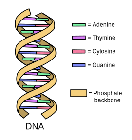
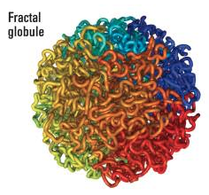
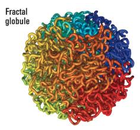
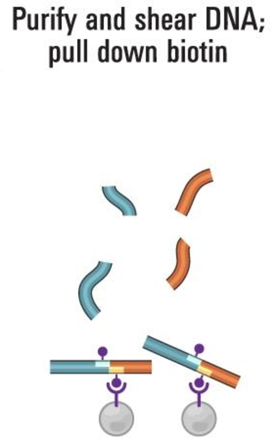
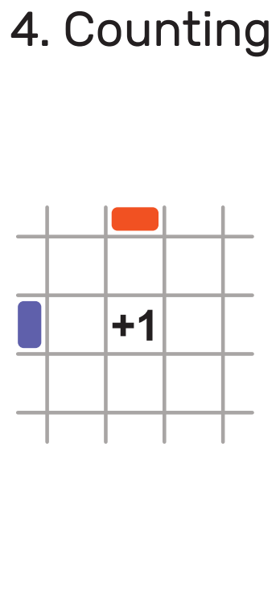
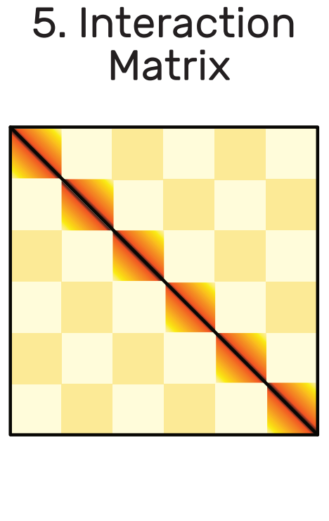
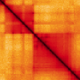
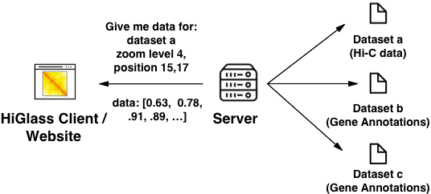
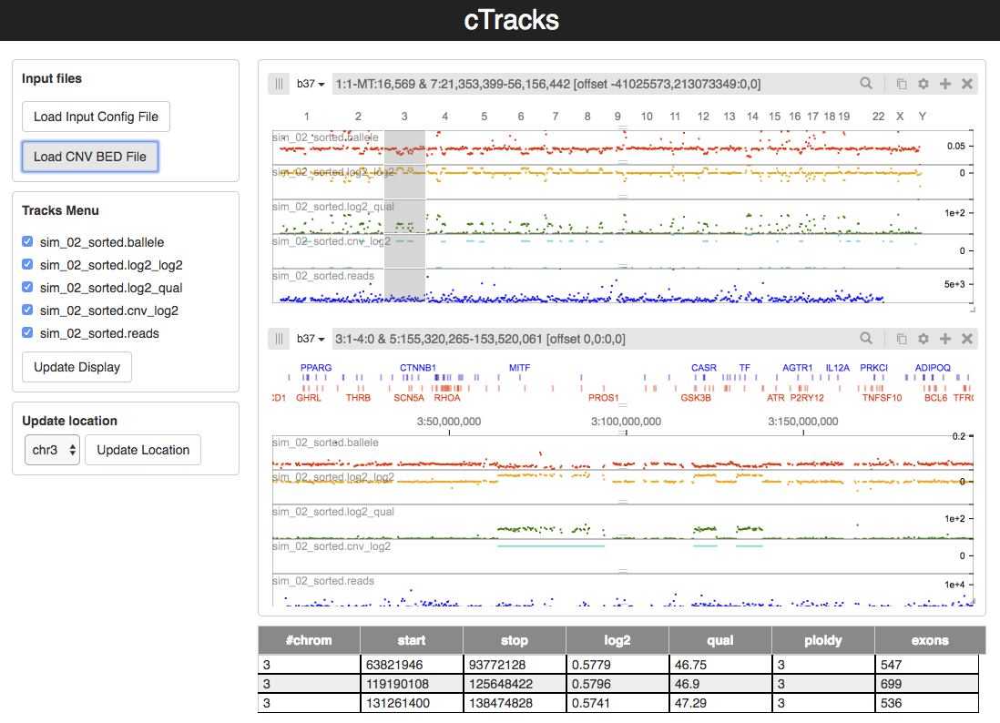

Genomes, maps and matrices
How we use the technology behind web-based maps to explore trillion-cell genome contact matrices
Peter Kerpedjiev
Postdoc, Gehlenborg Lab
Harvard Medical School
Topics
- The questions
- The data
- The challenges
- The technology
- The other applications
- The summary
Topics
- The questions
- The data
- The challenges
- The technology
- The other applications
- The summary
A question
What is the structure of DNA within the nucleus?
DNA
|  |

|
3.4e-10m distance between base pairs * 6e9 base pairs ~= 2.04 meters of DNA in a single cell
The nucleus

Nucleus is about 1 micrometer (1e-6 meters) in diameter.
DNA is tightly packed within the nucleus

|
A question
How do we measure DNA structure?
How do we measure DNA structure
X-Ray Crystallography?
Structure 5I6Q from PDB

How do we measure DNA structure
Microscopy?
Horng et al. Science 2017

How do we measure DNA structure
Contacts?

Why do we measure DNA structure?
 

It affects biological processes such as gene expression (Zuin et al. 2014), cancer (Hnisz et al. 2016), X-Chromosome inactivation (Chen et al. 2014)
Topics
- The questions
- The data
- The challenges
- The technology
- The other applications
- The summary
The Data
What is Hi-C data?
Hi-C data describes contacts between distal portions of DNA
 |
 |
 |
 |
 |
 |
Hi-C Data (Overview)
 |
 |
 |  |
The end result of a Hi-C assay is a sparse 3 million by 3 million contact matrix.
Topics
- The questions
- The data
- The challenges
- The technology
- The other applications
- The summary
Hi-C Data Visualization Challenges
- Big data - 3M x 3M matrices
- Disparate data - many relevant datatypes
- Lots of data - many different samples and experimental conditions
Big data: how do we display a 3M x 3M matrix in a browser?
Solution: Allow the user to navigate the matrix like a map: zooming and panning to regions of interest.
How does this work?

Challenges
- Data storage: HDF5 files storing sparse matrices at multiple resolutions (1K, 2K, 4K, ...)
- Data fetching: Use augmented online maps API
dataset/zoom_level/x_position/y_position/data_transform - Data rendering: Use WebGL-based PIXI.js to render textures containing 65K blocks of data points (tiles)
What else do we know about the genome?
| Contacts |  | Matrix |
| Chromosome boundaries |

|
Axis |
| Gene Annotations |

|
Standard UCSC Genome Browser-like Exon/Intron view |
| Signal tracks (e.g. TF binding) |

|
Normal line plot |
How do we display multiple different data types?
What other information can help us understand genome structure?
How do we serve from multiple data sources?
Lots of data: Each dataset is stored in a compressed multi-resolution file on the server.
What if we want to see context?
How do we generalize location synchronization and overview - detail between multiple views?


Create a user interface for creating and linking views by zoom, location or projection.
Topics
- The questions
- The data
- The challenges
- The technology
- The other applications
- The summary
Technology Stack: Front End
PixiJS (WebGL) vs. SVG (DOM)

Technology Stack: Back End
- Django server for storing list of available datasets
- HDF5 based file storage for large arrays and matrices
- SQLite for annotation storage (R-tree indexing for range queries)
Topics
- The questions
- The data
- The challenges
- The technology
- The other applications
- The summary
Exploring clinical copy number variation calls
Collaboration with Unversity of Utah and ARUP Laboratories

How do we place computational calls in genomic context?
cTracks
Clinician-focused web application for exploring copy number variations within a genomic context
Topics
- The questions
- The data
- The challenges
- The technology
- The regions
- The summary
Summary
- Genome Organization
- Big Data
- Disparate Data
- Lots of Data
- Other Applications
Acknowledgements
Harvard Medical School
- Nils Gehlenborg
- Fritz Lekschas (also at John Paulson School of Engineering)
- Nezar Abdennur
- Chuck McCallum
- 4DN DCIC Team
MIT
- Nezar Abdennur
- Leonid Mirny
University of Utah
- Alex Lex
- Clement Vachet
ARUP
- Jacob Durtschi
- David Lachowski